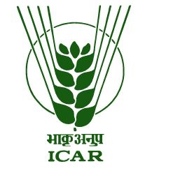

About Us

The Monitoring, Evaluation, Learning, and Impact Assessment (MELIA) Unit at ICAR-NIAP has been established to strengthen evidence-based planning, monitoring, evaluation, and institutional learning across the ICAR research and education system.As the apex organization for coordinating and managing agricultural research and education in India, ICAR plays a vital role in ensuring food, nutritional, and environmental security.
MELIA also emphasizes institutional learning by documenting best practices, identifying challenges, and supporting continuous improvement in programme implementation and policy decision-making. The Unit assesses the impact of ICAR technologies and interventions on agricultural productivity, food security, rural livelihoods, climate resilience, and sustainable agricultural development.
To strengthen data-driven governance, the MELIA Unit works toward integrating existing ICAR data systems, including institute MIS platforms, KVK reporting systems, and legacy programme databases. By promoting standardized reporting systems, interoperability, and robust data analysis, the Unit aims to support informed decision-making and enhance the overall effectiveness of agricultural research and development initiatives in India.
Our Team

Dr. ABC
Head of Unit

Dr. XYZ
Scientist

Research Associate
Data Analytics
Resources
Documents
Access reports, publications, datasets, policy briefs and research documents.
View Documents →